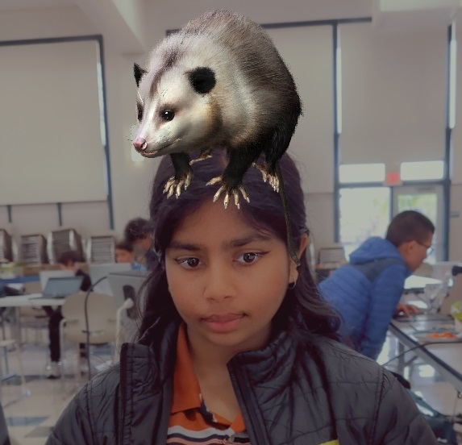
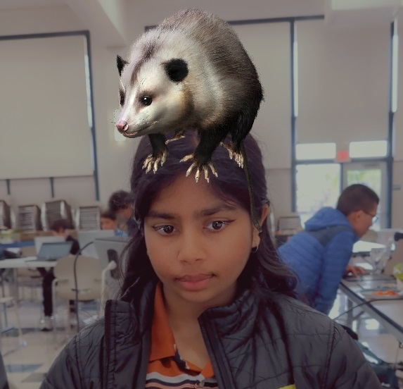

Dristi
Dristi is a sweaty software enthusiast
who overcame her desire
to punch everyone.
Kimmy
Kimmy is too nice and forgiving.
She needs better friends.
She also has EXTREME anxiety.
Ameya
Ameya has extreme social anxiety.
A website like this would have been extremely
helpful for her to find friends.
Lily
Lily is too scared to talk to people,
so this website could help someone
like her inspire confidence.
Our Motivation
We want to improve people's overall well-being. Since we
ourselves have struggled with mental health, we wanted to
find a way to help others
in their journey of self-
improvement. Maintaining good mental health improves
physical health as well as productivity, social connections,
and reduces the risk of mental disorders. We want to help
people improve their quality of life because this not only
affects inividuals,
but society as a whole.